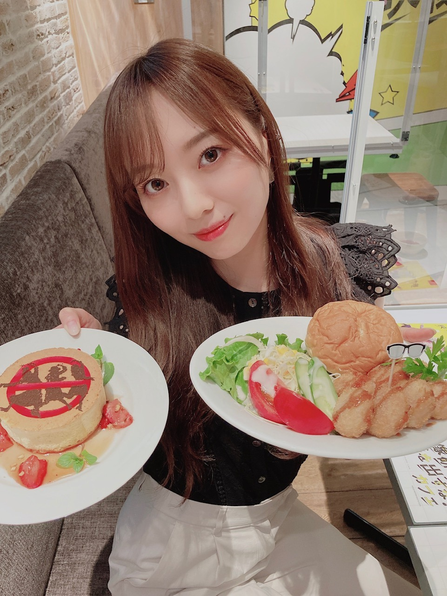
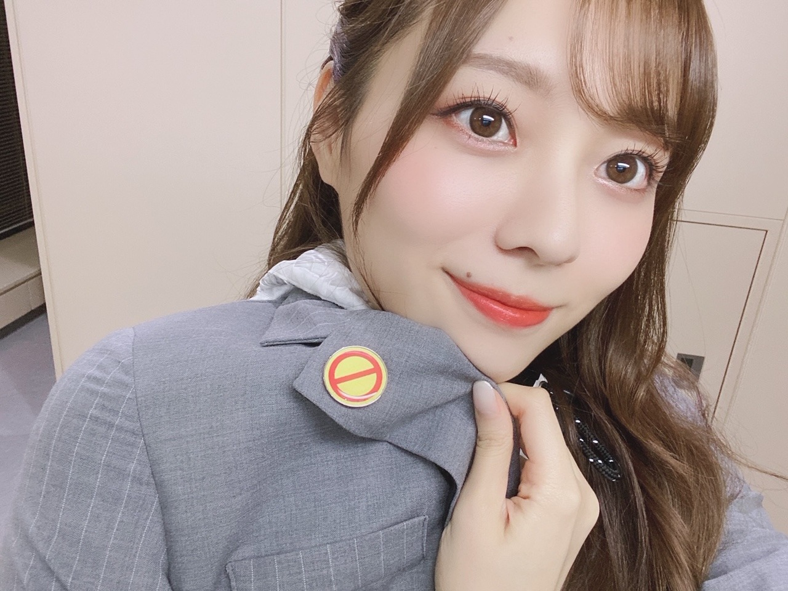
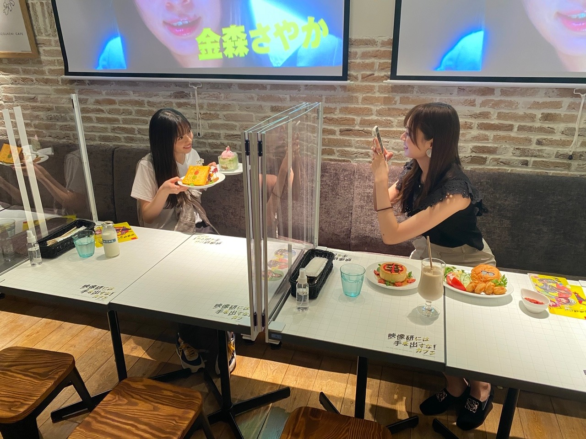
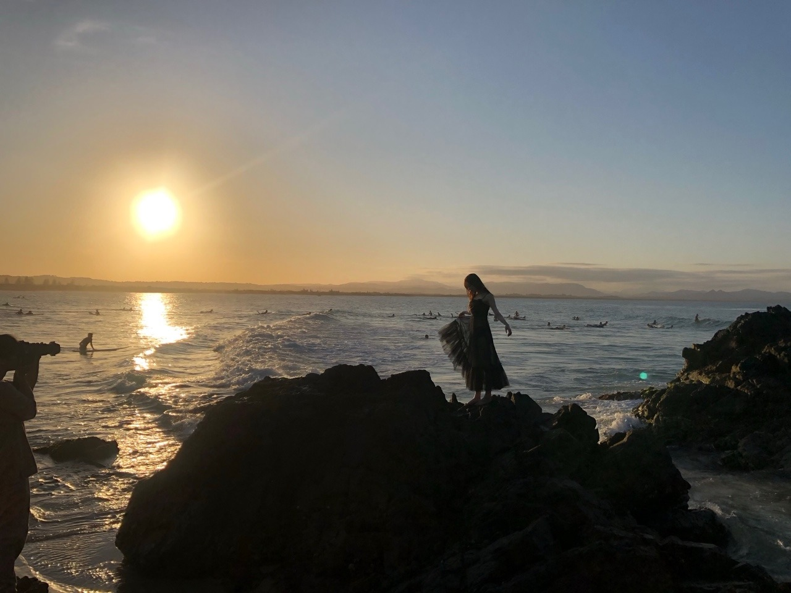

美化してしまいがちだけど

飛鳥さんが撮ってくれました︎︎︎︎❤︎
映像研カフェ！
表参道とソラマチにて開催中ですよ〜
皆様ぜひ行ってみてね〜
涼しくなってきましたねえ
夜の気温が好きで好きでたまりません。
金木犀を まだかまだかと
待ち望んでいます( ˙-˙ )
この間葉月にね、
と言われたの︎︎︎︎✌︎よく見てくれてる嬉しい
秋になると
Flowerさんの「初恋」を聴きたくなります。
中学生の頃通学路の畑を歩きながら
友達とお散歩してたなあ〜
音楽は季節や香りを思い出させてくれる
すごく特別なものですね☀︎
さて！昨日は飛鳥さんと山と
出演させて頂きました！
ファンタスティック3色パンを
披露させていただきました、、！
なんとも、まさかテレビでパフォーマンスさせて頂ける日が来るなんて想像もしてなかったので
私達自身とてもびっくりでしたが
すごく嬉しかったです。
もう、楽しかったです。ひたすらに。
衣装をこの日のために作って下さり、、
映像研らしさを存分に取り入れた迷彩柄と
学生服のようなブレザーのジャケット。
そしてファンタスティックの"F"も
衣装に散りばめられていてとても可愛いかった！！
振り付けもどこかコミカルで
印象的で可愛らしい振り付けにしていただいて
踊っていて最高に楽しかったです☀︎
録画した方、もしいたら
何度も見返して欲しいなあ〜
振り付け真似して欲しいです◎
本番前はドッキドキの３人でしたが
出番直前に３人で円陣を組んで挑みました☀︎
観てくださった皆様、ありがとうございました！

バッチも可愛い〜！！
さて、映像研の公開がいよいよ迫ってきました〜！
もう撮影したのはもう約一年前。
いやあ、びっくりしますね。早すぎて。
時の流れって怖い。
もう少しだけゆっくり進んで欲しい、、もっとじっくりあじわいたい
改めてたくさんの方に見て頂きたいと
心から思います。
こんな時代だからこそ
クスって笑ってもらったり
何か夢中になっている事へのモチベーションだったり
幼き頃の心を思い出したり
夢への原動力だったり
そんな何かのきっかけになるといいなあ。
物語は物凄い勢いで進んでいきます。
とってもスピーディかつ、情報量もたっぷり。
次々と出てくるキャラクターが
これまたみーんなパンチが強くて魅力的で
皆が皆一生懸命で、
ボロボロになっても必死に、
理想を追い求め諦めることなくとことん好きなものを追求していく。
そんな姿が愛おしく、かっこよく、羨ましく、
眩しいくらいにキラキラして見えます。
流れに身を任せて映像研の世界にどっぷり浸かっていただけたらなと。
映画といえば？
わたしはチュロス片手に席へ向かいます。
映画が始まる前に大体食べ終わってしまうから
少し計算しながら食べます。
あとはポップコーンも必須。
これは食べ切ることなくひたすら食べていられるから大事。
皆様それぞれの楽しみ方で
万全の状態で映像研を楽しんでくださいませ！
２４日には前夜祭と題しまして
舞台挨拶中継付き上映会もございます！
我々映像研はもちろん
キャストの皆様と監督と登壇します。
直接とはいかなくとも、
生で、各地の劇場にいるお客様と
同じ時間を過ごすことが出来る喜びを実感しております。
それぞれの劇場にて順次販売が開始されます！
映画を何倍も楽しめるようなトークが出来たらいいなあと思っておりますので皆様ぜひ。
２５日には
「公開初日をみんなで祝う配信イベント」
を開催しちゃいます！
こちらもお楽しみに︎︎︎︎✌︎

撮りあいっこ撮りあいっこ
告知◎
９／２３ ラジオ「レコメン！」文化放送 22:00〜
９／２４ 「THE 突破ファイル」
９／２４ 「映像研には手を出すな！ 前夜祭イベント」
９／２５ 「映像研には手を出すな！」公開
９／２６ 「月刊スピリッツ」
９／２７ ラジオ「らじらー！サンデー」nhk 20:05〜
９／２８ 「with」
９／２８ 「週刊プレイボーイ」
９／２８ 「週刊スピリッツ」
９／２８ 「装苑」
９／２９ １st写真集「夢の近く」発売！！
９／３０ 「anan」
１０／４ 「日経エンタテインメント！」
よろしくお願いします❤︎
そしてそして、１st写真集「夢の近く」
発売まで間もなくです、、！
先日、パネル展用のパネルたちに
サインやメッセージを書いてきました︎︎︎︎✌︎
私がたくさんいました( ˙-˙ )
おっきかった〜！！！
これが書店に並ぶのかあ、、と。
まだあまり実感がありませんが
物凄く楽しみです❤︎
ぜひ見に行って欲しいでする( .. )
本誌もいよいよ出来上がり、手にしました！
時間や想いが詰まりに詰まった1冊。
何度も何度も繰り返し見てしまいます（笑）
ホントに一冊丸々梅澤なので、
めくってもめくっても梅澤。
あ〜これは現実なのか〜と
すごく幸せな気持ちに浸っております。
色々な仕掛けがたっぷりかと思います。
見て、楽しんで貰えたらいいなあ。

撮影から約半年かあ。
大好きなwithチームの愛を日々感じ
私は本当に幸せ者だなと、、。
出会えてよかったと心から思う方たちが
周りにたくさん溢れていて
毎日本当に幸せです！！
皆様の手元へ渡り
それぞの場所でこの一冊が存在することが夢のよう。
楽しみにしててください☀︎
ではでは
また書きますね
写真集では
三つ編みもしてもらいましたよ〜〜珍しい
過去を自分だけで振り返るのも楽しいけど
誰かと共有して思い返すのも楽しい〜
新たな記憶がたくさん蘇ってきます
容量無くたくさん詰め込みたい思い出たちばかりだなあ
Original：https://www.nogizaka46.com/s/n46/diary/detail/57843?ima=4936&cd=MEMBER